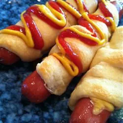

Back to Recipes

Description
These crescent roll hot dogs are similar to piggies in a blanket but with a yummy surprise: melted cheese in each frank.
Ingredients
- 8 hot dogs
- 4 slices American cheese, each cut into 6 strips
- 1 (8 ounce) can Pillsbury® refrigerated crescent dinner rolls
Steps
- Preheat the oven to 375 degrees F (190 degrees C).
- Slit hot dogs to within 1/2 inch of ends; insert 3 cheese strips into each slit.
- Separate crescent dough into triangles. Wrap each hot dog with a dough triangle, then place cheese-side up on an ungreased cookie sheet.
- Bake in the preheated oven until golden brown, 12 to 15 minutes.